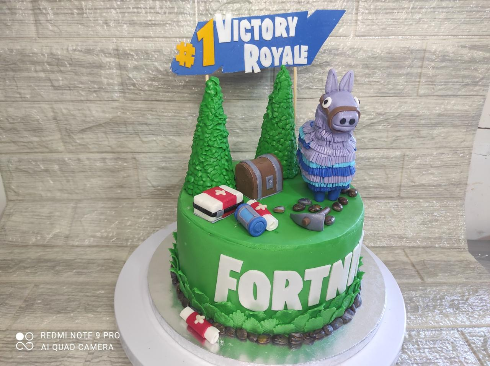
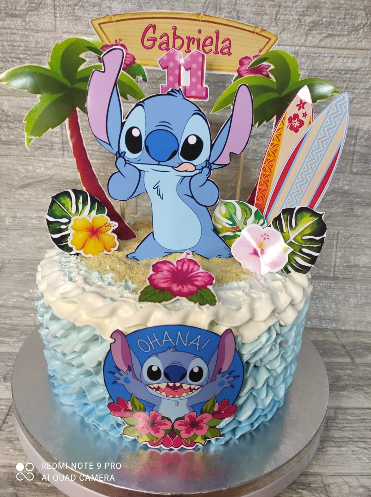
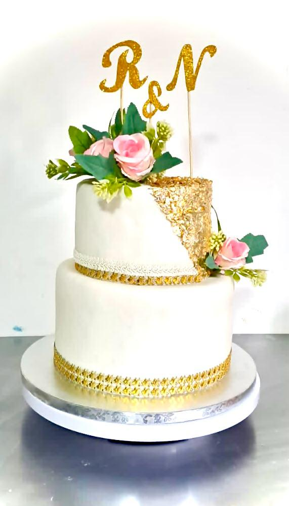
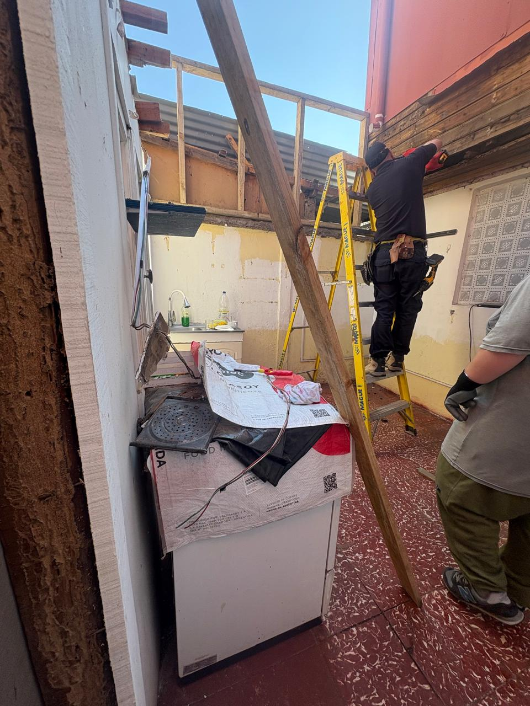
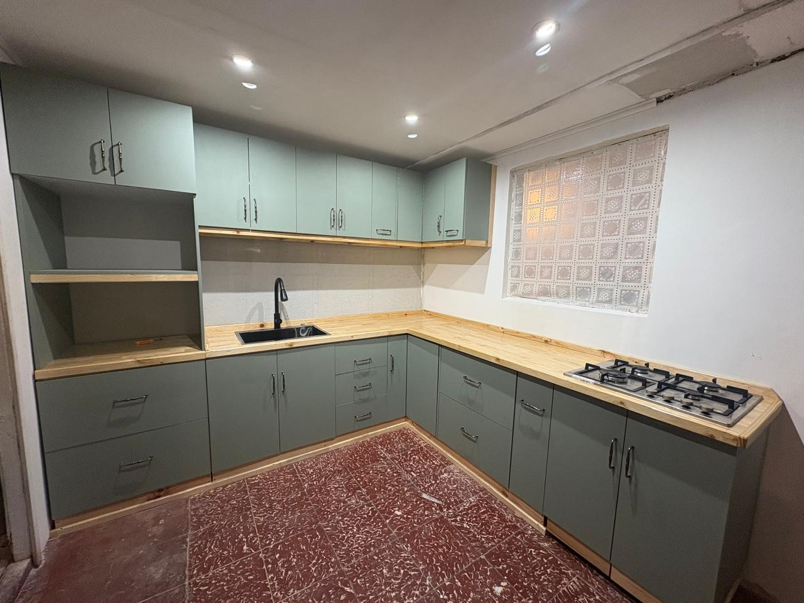

En este sector podras conocer un poco más de mi vida no profesional... pero si de mis gustos y pasatiempos!
Me encanta la pasteleria temática y los desafíos que esta implica, crear tortas y postres que no solo sean deliciosos sino también visualmente atractivos. Disfruto cada etapa del proceso: diseñar, decorar y combinar sabores y texturas para sorprender a quienes celebran y los disfrutan.



Reutilizar, modificar y transformares uno de mis pasatiempos favoritos y una extensión natural de mi formación como Diseñadora Industrial. Disfruto dar nueva vida a piezas olvidadas o desechadas, convirtiéndolas en objetos funcionales y estéticamente atractivos. Este proceso me permite combinar creatividad con habilidades manuales, y el resultado final es siempre gratificante.


Viajar es una de las actividades mas cansadoras y gratificantes, ya que me permite descubrir nuevas culturas, paisajes y experiencias. Me encanta planificar mis viajes para incluir tanto actividades culturales como de aventura. Cada viaje es una oportunidad para aprender y crecer, y siempre regreso con recuerdos inolvidables y una perspectiva más amplia del mundo.